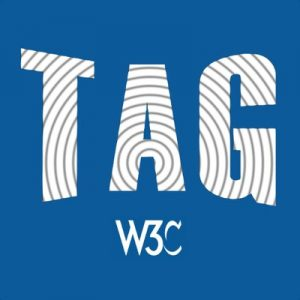

Job: Automotive and Transportation Champion (USA, China, Japan)
15 November 2021 |
Archive
We are excited to announce an open position (possibly part-time) : Automotive & Transportation Champion, based in the USA or China, or Japan.
This is an opportunity for a global leader to drive the overall strategy of applying open web standards to the automotive & transportation ecosystem. The Champion is a thought leader who has a deep understanding of the needs of the automotive industry and a working understanding of web technology. The Champion engages with other automotive thought leaders from W3C Members and with technologists in W3C. By bringing these groups together, the Champion identifies new technology needs for the industry and identifies technical and business approaches to satisfy those needs.
W3C Invites Implementations of CSS Conditional Rules Module Level 3, CSS Cascading and Inheritance Level 4 and Level 5
13 January 2022 |
Archive
The CSS Working Group invites implementations of the following three Candidate Recommendation Snapshots:
- CSS Conditional Rules Module Level 3 contains the features of CSS for conditional processing of parts of style sheets, conditioned on capabilities of the processor or the document the style sheet is being applied to. It includes and extends the functionality of CSS level 2 [CSS21], which builds on CSS level 1 [CSS1]. The main extensions compared to level 2 are allowing nesting of certain at-rules inside @media, and the addition of the @supports rule for conditional processing.
- CSS Cascading and Inheritance Level 4 and CSS Cascading and Inheritance Level 5 describe how to collate style rules and assign values to all properties on all elements. By way of cascading and inheritance, values are propagated for all properties on all elements. New in Level 4 are the revert keyword and <supports-condition> for the @import rule. New in Level 5 is cascade layers.
Comments are welcome via the GitHub issues by 13 March 2022.
CSS Snapshot 2021 Note Published
21 December 2021 |
Archive
The
CSS Working Group
has published a Group Note of
CSS Snapshot 2021.
This document collects together into one definition all the specs that together form the current state of Cascading Style Sheets (CSS) as of 2021. The primary audience is CSS implementers, not CSS authors, as this definition includes modules by specification stability, not Web browser adoption rate.
CSS
is a language for describing the rendering of structured documents (such as HTML and XML) on screen, on paper, etc.
Three First Public Working Drafts published by the CSS Working Group
21 December 2021 |
Archive
The CSS Working Group has published the following three First Public Working Drafts:
- CSS Containment Module Level 3: This CSS module describes the ‘contain’ property, which indicates that the element’s subtree is independent of the rest of the page. This enables heavy optimizations by user agents when used well.
- CSS Conditional Rules Module Level 5: This module contains the features of CSS for conditional processing of parts of style sheets, based on capabilities of the processor or the environment the style sheet is being applied in. It includes and extends the functionality of CSS Conditional 4 [css-conditional-4], adding the generalized conditional rule ‘@when’ and the chained conditional rule ‘@else’, as well as introducing font processing queries to the supports query syntax used in ‘@supports’ rules.
- CSS Cascading and Inheritance Level 6: This CSS module describes how to collate style rules and assign values to all properties on all elements. By way of cascading and inheritance, values are propagated for all properties on all elements. New in this level is § 2.5 Scoped Styles.
First Public Working Draft: EditContext API
21 December 2021 |
Archive
The Web Editing Working Group has published a First Public Working Draft of EditContext API. The EditContext is a new API that allows authors to more directly participate in the text input process.
W3C Advisory Committee Elects Technical Architecture Group
15 November 2021 |
Archive

The W3C Advisory Committee has elected the following people to the W3C Technical Architecture Group (TAG): Rossen Atanassov (Microsoft Corporation), Dapeng (Max) Liu (Alibaba Group) and Sangwhan Moon (Google). They join co-Chair Tim Berners-Lee and continuing participants, Daniel Appelquist (Samsung Electronics; co-Chair), Hadley Beeman (W3C Invited Expert), Amy Guy (Digital Bazaar), Peter Linss (W3C Invited Expert; co-Chair), Theresa O’Connor (Apple, Inc.) and Lea Verou (W3C Invited Expert) . Yves Lafon continues as staff contact. Many thanks for contributions to the TAG to the departing participant, Kenneth Rohde Christiansen (Intel Corporation), whose term ends at the end of January 2022.
The TAG is a special group within the W3C, chartered under the
W3C Process Document,
with stewardship of the Web architecture. The mission of the TAG is to build consensus around principles of Web architecture and to interpret and clarify these principles when necessary, to resolve issues involving general Web architecture brought to the TAG, and to help coordinate cross-technology architecture developments inside and outside W3C. The Members of the TAG participate as individual contributors, not as representatives of their organizations. TAG participants use their best judgment to find the best solutions for the Web, not just for any particular network, technology, vendor, or user. Learn more about the
TAG.
ARIA in HTML is a W3C Recommendation
9 December 2021 |
Archive
The Web Applications Working Group has published ARIA in HTML as a W3C Recommendation. This specification defines the authoring rules (author conformance requirements) for the use of Accessible Rich Internet Applications (WAI-ARIA) 1.1 and Digital Publishing WAI-ARIA Module 1.0 attributes on [HTML] elements. This specification’s primary objective is to define requirements for use with conformance checking tools used by authors (i.e., web developers). These requirements will aid authors in their development of web content, including custom interfaces/widgets, that makes use of ARIA to complement or extend the features of the host language [HTML].
W3C Strategic Highlights, October 2021
19 October 2021 |
Archive
 W3C released today to the public the October 2021 edition of the
W3C Strategic Highlights.
This report highlights recent work W3C Members and the public do at the Web Consortium to enhance the Web platform, work towards its growth and strength so that the web remains a tool that has and will continue to accelerate scientific cooperation and discoveries, a social means to bridge families and friends, a way to learn online and grow skills, an instrument to conduct successful business, and much more.
W3C released today to the public the October 2021 edition of the
W3C Strategic Highlights.
This report highlights recent work W3C Members and the public do at the Web Consortium to enhance the Web platform, work towards its growth and strength so that the web remains a tool that has and will continue to accelerate scientific cooperation and discoveries, a social means to bridge families and friends, a way to learn online and grow skills, an instrument to conduct successful business, and much more.
You will find in this semi-annual report updates in key areas that are core to the Web platform, but also how W3C meets the needs of industry and society as a whole, how the future of Web standards is determined, and the latest information on Web for all and outreach to the world.